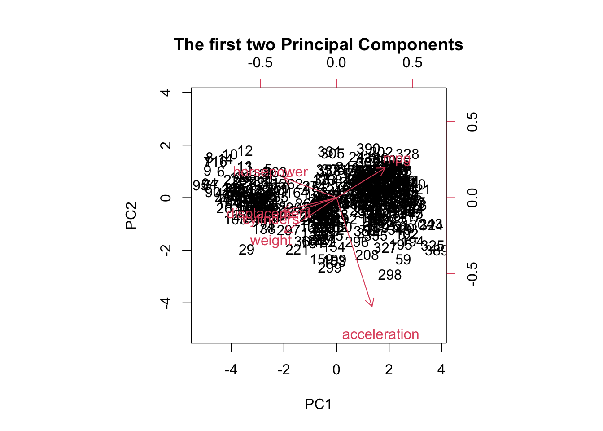

# Answer: fit lwr upr # 419998.9 336316.7 503681.1
(f)
Answer: Since the coefficient estimate of Story and Story^2 are 4737 and -59.9, respectively, the higher Story implies higher price, all else being equal. But the price increases in the decreasing rate as the quadratic term coefficient is negative. (Note that the turning point of the curve is at Story equal to 39 which is higher than the maximum of the variable in the data set.)
Call:
randomForest(formula = Balance ~ ., data = credit, mtry = 7, subset = train)
Type of random forest: regression
Number of trees: 500
No. of variables tried at each split: 7
Mean of squared residuals: 10895.92
% Var explained: 94.7
yhat.bag <-predict(bag.credit, newdata=credit.test)#MSE for baggingmse.bag <-mean((yhat.bag- credit.test$Balance)^2)mse.bag
[1] 8811.422
# (d)#using random forestrf.credit <-randomForest(Balance~.,data=credit,subset=train, mtry=3) #using random forestrf.credit
Call:
randomForest(formula = Balance ~ ., data = credit, mtry = 3, subset = train)
Type of random forest: regression
Number of trees: 500
No. of variables tried at each split: 3
Mean of squared residuals: 14969.82
% Var explained: 92.72
yhat.rf <-predict(rf.credit, newdata=credit.test)#MSE for random forestmse.rf <-mean((yhat.rf- credit.test$Balance)^2)mse.rf
[1] 11961.33
# (e)# use all data to construct the model with LASSO approachx <-model.matrix(Balance~., data=credit)[,-1]y <- credit$Balancelasso.all <-glmnet(x, y, alpha=1)lasso.coef <-predict(lasso.all, type="coefficients", s=lambda.lasso)[1:8,]lasso.coef[lasso.coef !=0]
Lasso model is the recommended model as it has smallest MSE of 8811.42
(Intercept): -512.0792119
Income: -7.8368385
Limit: 0.1265155
Rating: 2.0966366
OwnYes: -5.1476985
StudentYes: 418.8716851
MarriedYes: -6.5196042
RegionSouth: 7.4614610
The predicted values of the first five observations are 422, 940, 650, 962 and 419 respectively. The model under-estimates the fourth observation and over-estimates the rest.
Classwork 2
Question 1:
(a)
data <-c(8, 7, 5, 6, 6.4, 8.4, 9.2, 6, 7.5, 4.2, 5.6, 6.2, 7.2, 6.3, 7, 8, 3.7, 4.9, 5.2, 6.2)M <-matrix(data, nrow=5) # data matrix with dimension 5x4M
The loadings of the first principal component are -0.5742, -0.4595, 0.6085, and -0.2981. The loadings of the second principal component are -0.1583, 0.5929, -0.0861, and -0.7849.
The proportion of variance explained by the first principal component is 65.47%. The proportion of variance explained by the second principal component is 29.51%.
The first and second principal component scores for the first observation are -2.342 and -0.871, respectively.
The first and second principal component scores for the second observation are -654 and 1.524, respectively.
The first and second principal component scores for the third observation are 1.830 and 0.136, respectively.
The first and second principal component scores for the fourth observation are 0.068and 0.415, respectively.
The first and second principal component scores for the fifth observation are 1.098and -1.204, respectively
(b)
# Using pcobpcob <-prcomp(M, scale=TRUE) # use R function prcomp, with scaling# Use scaling when the features are very differentpcob$x
biplot(pr.out, scale =0, main ="The first two Principal Components")

(d)
# Answer: Loading value for variable, cylinders on PC1 is -0.4306152# Loading value for variable, cylinders on PC2 is -0.1483141
(e)
# Cylinders and displacement are highly correlated as they are going in the same direction
(f)
# The 27th observation has an approximate first principal component score of -3.8 and an approximate second principal component score of -0.8
(g)
plot(pve, xlab ="Principal Component", ylab ="Proportion of Variance Explained", ylim =c(0, 1), type ="b")
(h)
# Calculate and print the proportion of variance explained by each principal componentpr.var <- pr.out$sdev^2pve <- pr.var/sum(pr.var)Information_loss =sum(pve[3:length(pve)])Information_loss


 ### (a)
### (a)